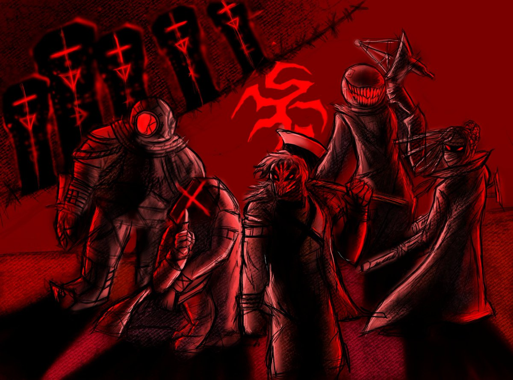
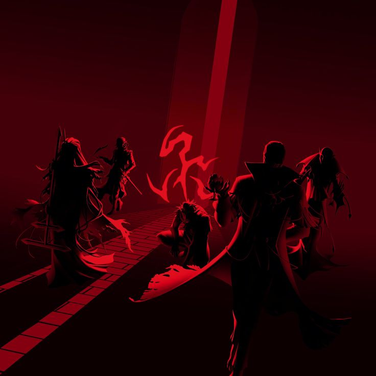
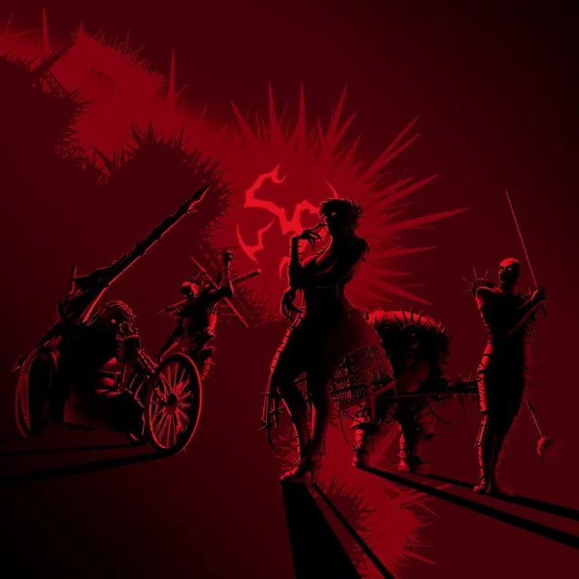
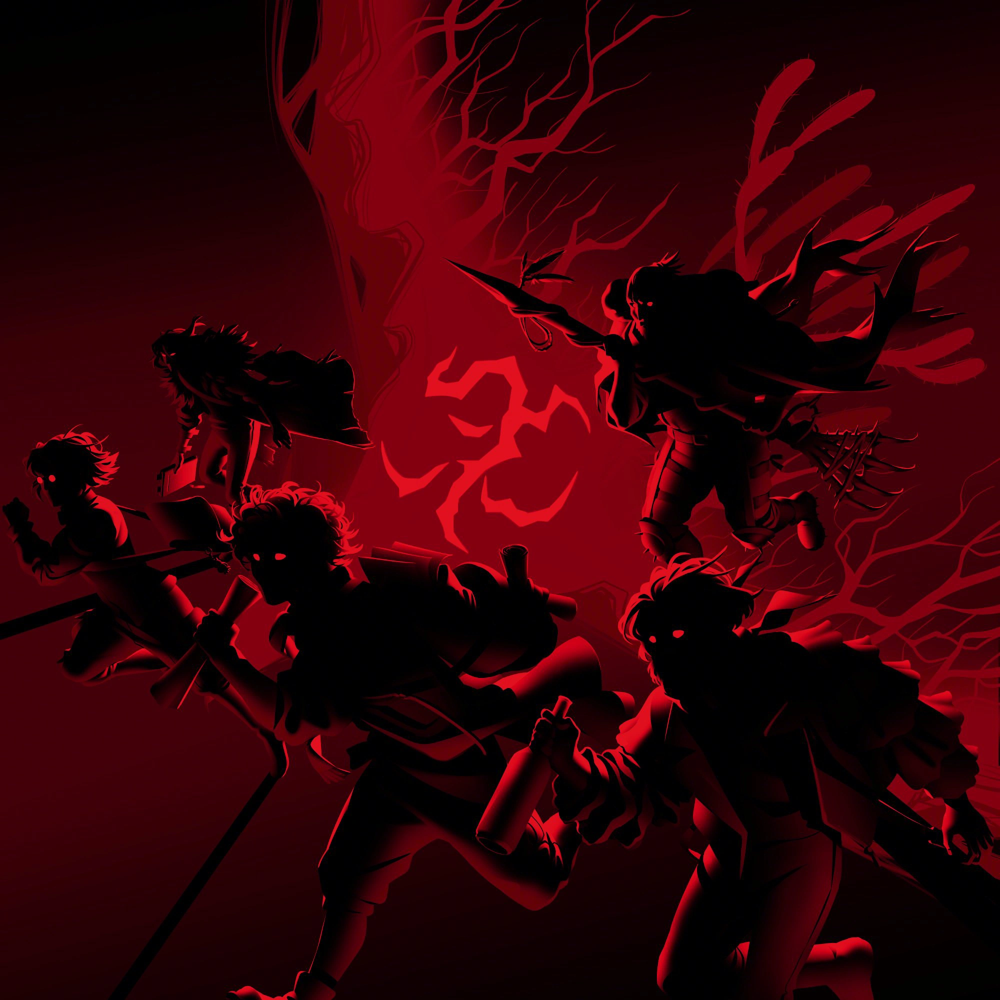
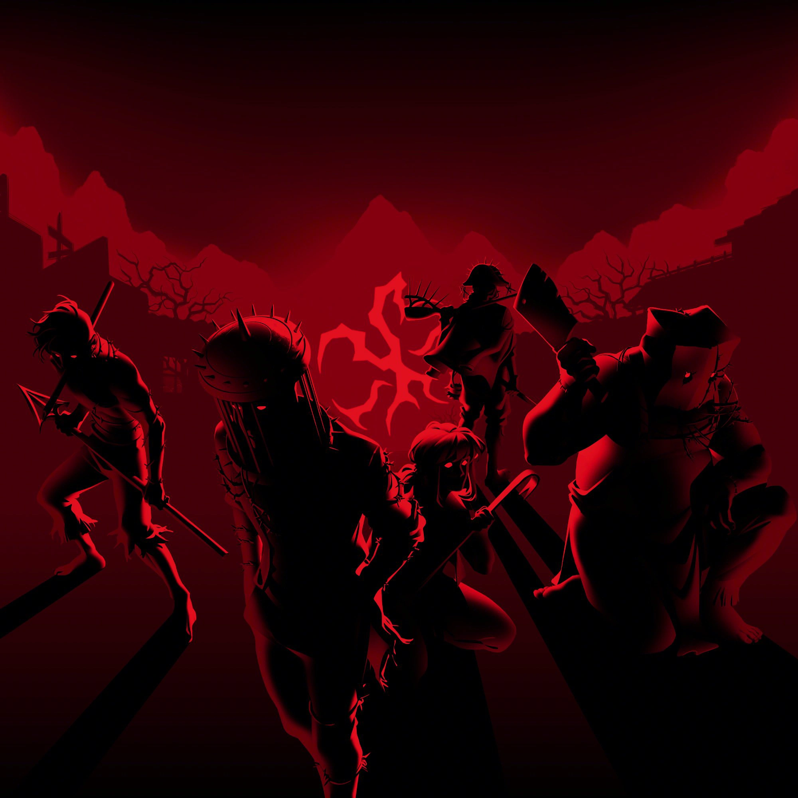

Psikolera foi uma banda de nu metal. O grupo musical apareceu no spin-off Hexatombe junto com o lançamento de seu single, PORTAL, também prometendo novas músicas junto com seu novo vocalista. A banda foi um dos seis grupos participantes do Hexatombe, sendo secretamente um grupo de ocultistas ligados ao Elemento de Sangue, utilizando como base o Circo.

Mascarados
A Equipe Mascarados, também conhecidos anteriormente como Equipe de Assassinos, são um dos seis grupos participantes da mais recente realização do ritual do Hexatombe, em 2023. O grupo é composto por cinco agentes da Ordo Realitas que tinham como objetivo conseguir informações sobre o antigo ritual ligado à luas de sangue.

Vampiros
Os Vampiros, eram um dos seis grupos participantes da mais recente realização do ritual do Hexatombe, em 2023. Seus membros eram compostos por Monstruosos de Sangue liderados por Raziel.
Entre os grupos participantes, os Vampiros eram os menos ativos, pois atacavam apenas durante a noite caso nenhum sacrifício tenha sido feito até aquele momento. Durante o dia, permaneciam inertes em sua base, a Igreja Antiga.

Couraças
Os Couraças, também conhecidos como os Armadurados, são um dos seis grupos participantes da mais recente realização do Ritual do Hexatombe, em 2023. Seus membros eram compostos por ocultistas de vários países, liderados por Escarlata.
Quando não estavam em patrulha, ficam em sua base, uma fortaleza impenetrável no Ferro Velho

Pássaros
Os Pássaros são um dos seis grupos participantes da mais recente realização do ritual do Hexatombe, em 2023. Seus membros são compostos por aventureiros desbravadores liderados por Harpia.
Entre as equipes participantes eles são os melhores na aquisição de informações, vasculhando e coletando o máximo de informações de todas as outras equipes ainda no primeiro dia. Eles ficam em sua base no Acampamento a beira do lago.

Transtornados
A Equipe Transtornados era uma das seis equipes participantes do Hexatombe que está ocorrendo em 2023. Ela é formada por membros do grupo ocultista Transtornados e alguns outros que foram levados apenas para preencher as vagas.
Após os eventos da noite do segundo dia, após o sacrifício da equipe ser morto por Kemi e sua estrutura ficar enfraquecida devido à morte de Mosto.